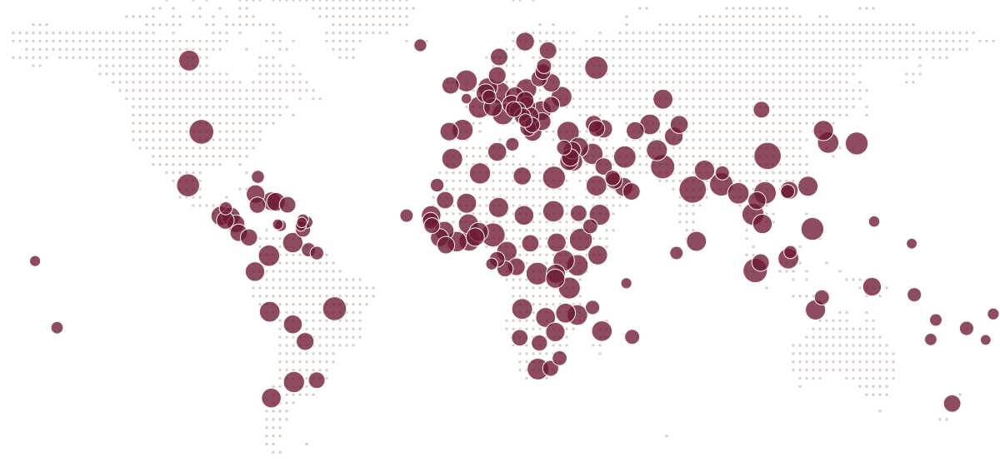

你會生在
哪裡？
今天世界上大約有 36 萬個嬰兒出生。照真實的出生人數抽一個國家，過完一生，大約 5 分鐘。過完之後，還能回到某一年，走另一條路。
依真實統計，可能遇到死亡、戰爭、童婚等沉重情節，建議 15 歲以上。
家境、性別、城鄉都是隨機的。1996 到 2025 年的國家大事照真實歷史，之後照過去 30 年的規律推估。這是示意，不是預測。
你也卡在這種事嗎？
「offer 來了，可是年終還沒發。」
走還是留現在走會丟掉多少、新工作的風險、家裡撐得住多久
「生意不錯，要不要開第二家店？」
擴大還是守住錢從哪裡來、誰去帶、撐多久沒起色就停
「撐了三年，該不該收掉？」
縮小或收掉現金還能撐幾個月、合約和員工怎麼辦、想留下什麼
「投資人願意給錢，但條件有點硬。」
錢和夥伴條款最壞會怎樣、拿完錢你還占幾成、不拿還有什麼路
「想交給孩子，老員工不服。」
人和交棒誰反對、在意的是什麼、交接的期限和你保留的權力
